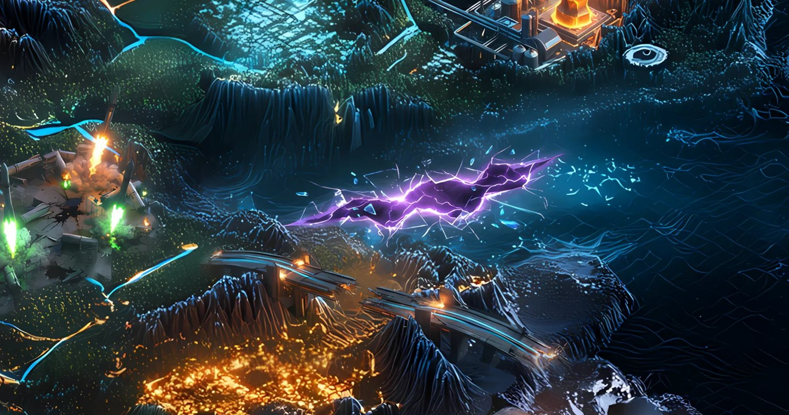

Record // SECURITY
WORMHOLE BREACH

A signature check that wasn't. 120,000 ETH minted from nothing. $320M gone in minutes.
What happened
In February 2022, an attacker exploited a signature-verification flaw in Wormhole — the bridge connecting Solana and Ethereum — to forge the minting of 120,000 wrapped ETH without depositing any collateral. Around $320M drained out in minutes, one of the largest DeFi hacks ever at the time. Jump Crypto, which backs Wormhole, replaced the funds within hours to keep users whole.
Why Solana remembers it
Cross-chain bridges are among DeFi's largest attack surfaces, and Wormhole became the dividing line: after it, bridge security, audits, and verification got dramatically more serious. It also exposed the double edge of a deep-pocketed backstop — users were protected, but only because a large player chose to absorb the loss.
On the map
A torn rift in the terrain — a reminder that every bridge between worlds has a cost.
Evidence
Historical reference only. No affiliation with or endorsement by Wormhole is implied.